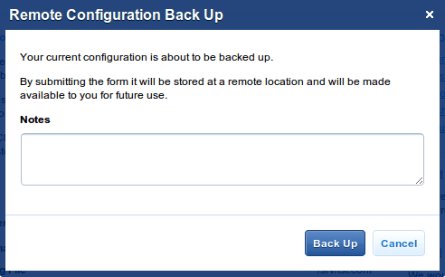
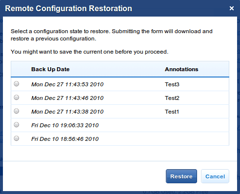

Through this section you will be able to launch and stop the web server. It also provides some useful information about the server and the configuration status, as well as some hardware stats. Also, the lower right corner of the screen will allow you to shut-down Cherokee-Admin without leaving the web interface, which might be convenient particularly if you have launched it using cherokee-admin-launcher.
Cherokee Admin’s home page
This section also enables you to change Cherokee-Admin’s current user language, and allows you to send feedback directly to Cherokee developers, as well as enlisting in our Proud Cherokee Users ranking.
From here you will have access to support links, and communication channels such as mailing lists, IRC and social media.
You will also be able to access an essential element of any Open Source project, the bugtracker. Do not hesitate to make use of it to log bugs and requests for enhancements.
Remote Services
Besides all that has been mentioned already, the Remote Services section will bring you a completely new range of possibilities.
This checkbox can be disabled for those who do not wish to interact at all with the outside World. Just leave it unchecked, and Cherokee-Admin will offer more or less the same capabilitites that it had to offer before the Cherokee Market era. However, when this option is checked, the new Market section will appear in the graphical interface, and the free Backup Service will be at your disposal.
Read more about Cherokee Market to learn about its full potential. You can join the Market by creating a free account using the link provided for that purpose.
To take advantage of the Backup Service, you will need a Cherokee Market account, and will have to be logged in.
Backup Service
Once you are logged in, you will be able to remotely backup and restore your configuration, so that it is accessible from wherever you need it, whenever you need it.
You can associate description notes to each saved configuration, and it will be stored along the date of creation so that you can easily retrieve it in the future.

Backup dialog
And of course, you can restore any previous configuration state at any given moment. This makes it very easy to experiment with Cherokee, without ever worrying about breaking your configuration.

Restore dialog